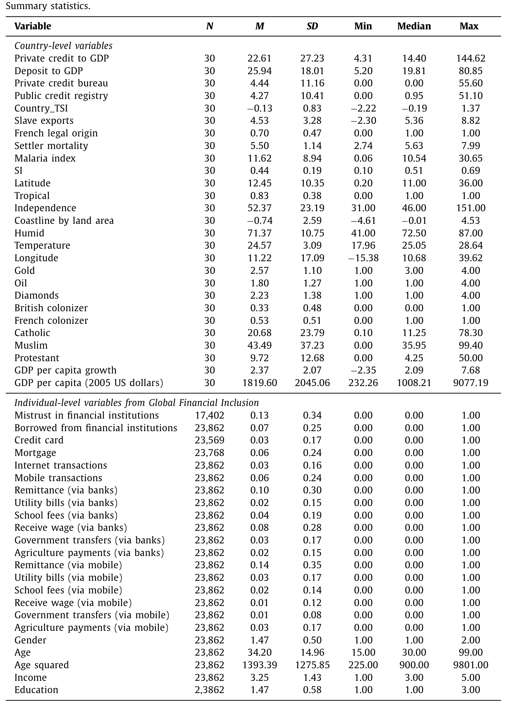
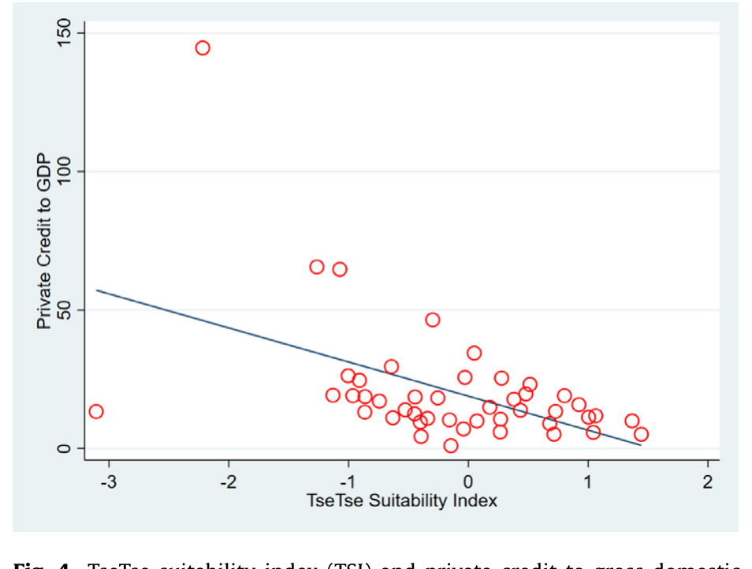
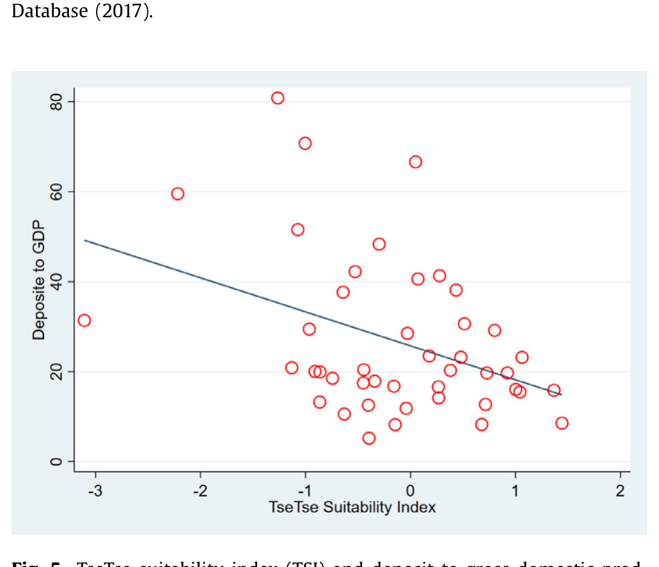
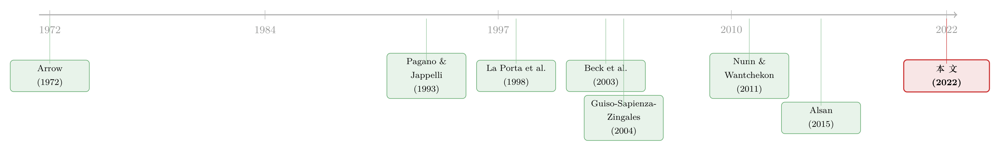

一只苍蝇，如何在三百年后掐住了非洲人的钱包
本文读的是 An, Hou & Lin (2022, Journal of Financial Economics)：他们借用一种只生活在非洲、对牲畜致命的采采蝇（TseTse fly）在前殖民时代的分布，证明了历史上疫病越严重的地区，今天的企业和家庭越借不到钱——而且这条因果链不是通过法律和正式制度，而是通过信任、信息共享、技术采纳这三样「文化」传下来的。
1 一个老问题，和一个被忽略的答案
为什么有的地方金融体系发达，有的地方却长期「钱借不出、款贷不进」？
这是金融学里最古老、也最迷人的问题之一。金融对经济增长的作用早已被反复确认（Levine, 1997 的综述是绕不开的起点），于是真正的悬念落在了「为什么」上：是什么决定了一国、一地金融发展的高低？
过去三十年，经济学家给出过几条互不相让的答案。La Porta 等人（1997, 1998）把矛头指向法律制度（legal institutions）——普通法系国家更能保护投资者，于是金融更发达。Stulz 和 Williamson（2003）则反驳说，撇开法律不谈，一国的文化（culture）本身就有很强的预测力。而真正把「疫病」推上前台的，是 Beck、Demirgüç-Kunt 和 Levine（2003）那篇影响深远的工作：他们发现，几百年前殖民者面对的疾病环境，深刻影响了殖民策略——在那些欧洲人难以定居的、疫病肆虐的地方，殖民者懒得建立保护产权的制度，只想着「榨干就走」，于是留下了一套攫取型制度（extractive institutions）；而在适合定居的「新欧洲」，他们才认真搭建起利于金融发展的产权与合约执行体系。
Beck 等人的故事很漂亮，但它把疫病的影响完全锁死在了「正式制度」这一条管道里：疫病 → 殖民策略 → 制度 → 金融。
于是一个自然的问题浮了出来：疫病难道就只能通过制度来影响金融吗？它能不能绕过制度，直接改写一个社会的「文化」——比如人与人之间的信任——再由文化去塑造金融？
这正是 An、Hou 和 Lin 这篇文章想钉死的一颗钉子。
2 一只苍蝇，为什么是个好实验
要回答上面的问题，你需要一个「疫病」的冲击，而且这个冲击最好满足两个苛刻的条件：它在地理上要有足够细的变化（这样才能控制住国家层面的制度），又要能干净地从「热带气候」「农业条件」这些老牌混杂因素里剥离出来。
作者找到的答案，是一只苍蝇——采采蝇。
它好在哪？故事要从 Alsan（2015）那篇开创性的工作讲起。采采蝇传播一种寄生虫，对人引发昏睡病（sleeping sickness）、对牲畜引发那加那病（nagana），后者尤其致命。结果是：在采采蝇肆虐的地区，驯化牲畜几乎无法存活。
这件事看似只是个兽医学问题，却在历史长河里掀起了滔天巨浪。没有牲畜，意味着没有粪肥、没有畜力，于是无法发展精耕农业（intensive agriculture），只能退回到刀耕火种、狩猎采集式的迁移农业（shifting agriculture）。而文献早已指出，这种粗放的生存方式只能养活精耕条件下五分之一的人口。人口于是被迫拆分成一个个小部落，族群高度碎片化，人与人之间为了争夺稀缺资源而长期竞争、冲突。
接着，一个自然的问题是：这种由苍蝇逼出来的生存策略，会在「文化」上留下什么样的疤？作者论证它至少改写了三件事，而且每一件都精准地戳在现代金融的命门上：
- 信任崩塌。 在一个随时可能因资源短缺而进一步分裂的碎片化社会里，人与人之间很难建立信任。而信任，恰恰是几乎一切金融合约的底层基础（Arrow, 1972；Guiso, Sapienza & Zingales, 2004, 2008）。
- 不愿分享信息。 在采采蝇肆虐的地方，把粮食和水源的信息藏起来，能提高自己的生存概率。久而久之，这种「藏」的习惯阻碍了信息共享制度的形成——而信息共享（比如征信）正是缓解信贷市场逆向选择的关键（Pagano & Jappelli, 1993；Djankov et al., 2007）。
- 抗拒新技术。 既然精耕农业的工具（犁、挽具）和运输技术（四轮马车、道路）都用不上，人们便习惯性地拒绝采纳新技术。这种「文化惯性」一直延续到今天，让人们不愿拥抱金融科技（Fintech）。
作者特别强调：这三条渠道并不互斥，反而是互补的。信任的缺失叠加信息不对称，会在金融市场里酿成严重的逆向选择；而要治这个病，恰恰需要信息共享制度和 Fintech——可这两样又同样被苍蝇按住了。三条线索最终拧成一股，共同解释了非洲金融发展的困局。
3 识别策略：怎样证明「是苍蝇，而不是天气」
这篇文章最见功力的地方，不在于讲了一个动人的故事，而在于它如何堵死所有「其实是别的东西在起作用」的退路。
研究者用的核心变量是 Alsan（2015）构造的采采蝇适宜度指数（TseTse Suitability Index, TSI）。它不是简单地数有多少只苍蝇，而是基于实验室里测出的采采蝇出生率、死亡率与温度、湿度的函数关系，结合网格化气候数据，模拟出每个族群聚居地的苍蝇「稳态种群」，再取其标准化的 Z 值。数字越高，代表前殖民时代该地的疫病越严重。
但一个聪明的读者立刻会反问：温度高、湿度大、热带气候——这些本身就可能既适合苍蝇、又拖累经济发展。你怎么知道 TSI 量的是苍蝇，而不是热带气候这个老对手？（关于热带气候长期困扰疫病经济学研究这一点，作者引了 Gallup & Sachs, 2001。）
作者祭出了三招，招招都冲着这个软肋去：
第一招，跨洲安慰剂检验。 采采蝇只生活在非洲。所以作者把企业层面的回归原封不动搬到南北回归线之间、非洲以外的地区（美洲、亚太）去跑。逻辑很干脆：如果 TSI 量的只是「热带气候 + 农业适宜度」这种到处都有的东西，那它在非洲之外也该有预测力；可如果 TSI 量的是苍蝇本身，那它在没有苍蝇的地方就该彻底失灵。结果支持后者——TSI 在非洲之外，与企业融资没有任何统计上有意义的关系。
第二招，温度扰动安慰剂。 采采蝇的存活依赖一组非单调的温度要求（non-monotonic temperature requirements）——太冷太热都不行。作者抓住这一点，把 TSI 公式里的温度输入做一个「量上微小、但生理上关键」的扰动，造出 Perturb TSI shift left 和 Perturb TSI shift right 两个伪指标。如果 TSI 真的只是个温度的代理，那把温度挪一点点不该改变它的预测力；可如果 TSI 精准刻画的是苍蝇，那这两个被扭曲的指标就该失去预测力。结果同样支持后者。
第三招，行业外部融资依赖度。 这是最优雅的一招。作者借用 Rajan & Zingales（1998）和 Fisman & Love（2003）的思路：如果苍蝇真的是通过信任、信息、技术这些渠道在卡企业融资，那这种伤害就该对越依赖外部融资的行业越明显。检验 TSI 与行业外部融资依赖度的交互项，让作者得以塞进族群聚居地固定效应（ethnic location fixed effects），从而把该地一切不随时间变化的混杂因素（殖民遗产、地理、气候、文化）一笔抹掉。结果与预测一致。
作者很坦诚地承认两个隐忧：一是遗漏变量偏误（omitted variable bias）——可能有别的变量同时决定了前殖民时代的苍蝇分布和今天的金融发展；二是测量误差——TSI 可能裹挟着热带气候对现代发展的影响。上面三招正是冲着这两个隐忧去的。至于反向因果，作者认为基本可以排除：解释变量刻画的是前殖民时代的疫病，今天的金融发展不可能穿越回去改写当年的苍蝇分布。
值得一提的是，他们还专门回应了 Lowes & Montero（2021）提出的一条竞争性机制：法国殖民者曾在中非搞过大规模医疗运动，用含砷的 atoxyl 给人强行注射（甚至持枪逼迫），药效差、副作用大（致盲、致死），这段经历可能让非洲人此后排斥医疗技术、进而排斥一切新技术。这会动摇作者「文化经由农业传导」的解释。作者的回应有两层：其一，这些医疗运动只覆盖了喀麦隆和原法属赤道非洲，而 TSI 在这些地区本就没多少变化；其二，Lowes & Montero 自己也没找到证据说这段经历让人普遍排斥外国技术。
4 数据
作者把多套数据缝在了一起，覆盖国家、企业、家庭三个层级。前殖民时代的疫病强度来自 Alsan（2015）的 TSI；要把企业和家庭对应到苍蝇分布，则靠 Murdock（1967）的非洲族群地图——用世界银行企业调查里调查簇的中心点，匹配到对应的族群聚居地。
金融发展指标五花八门：国家层面用 Private credit to GDP（私人信贷占 GDP 比重）和 Deposit to GDP（存款占 GDP 比重），都取 2006–2014 年的均值；企业层面用世界银行企业调查（2019）衡量企业能否拿到银行和外部融资；家庭层面则用全球金融普惠数据库（2014）和 FinScope（2016），看家庭是否借贷、是否使用信用卡、按揭等金融服务。气候数据来自 NOAA 的 20 世纪再分析数据集（20CRv2），用的是 1871 年的温湿度。
样本里的变化相当可观。与 Alsan（2015）的 44 国相比，作者在并入控制变量后保留了 30 个国家层面观测。TSI 在族群聚居地层面从 −2.14 到 1.50，在国家层面从 −2.22 到 1.37，两者的标准差分别为 0.99 和 0.83。而被解释变量这一头，Private credit to GDP 从 4.31% 一直拉到 144.62%，样本均值 22.61%、标准差 27.23%——非洲内部金融发展之悬殊，由此可见一斑。

Table 1
5 主要结果：苍蝇越多，钱越少
把这条故事线一路推到底，结论清晰得近乎残酷：前殖民时代采采蝇越猖獗的地方，今天的金融越不发达。
在国家层面，TSI 越高的国家，今天的私人信贷占 GDP 比重和存款占 GDP 比重都越低。下面这两张图把这种负相关画得一目了然——横轴是采采蝇适宜度，纵轴分别是私人信贷与存款占 GDP 的比重，斜率明明白白地向下走。

Figure 4: TseTse suitability index (TSI) and private credit to gross domestic

Figure 5: TseTse suitability index (TSI) and deposit to gross domestic prod-
把镜头拉近到次国家层面，画面同样统一：在苍蝇肆虐的地区，企业拿到的银行融资和外部融资更少，家庭也更不愿、更难从金融体系借钱或使用信用卡、按揭等服务。更关键的是，这些结果大多是在控制了国家与年份固定效应、以及一大串家庭/企业层面协变量之后得到的；在企业层面的若干设定里，作者还进一步加上了行业固定效应和族群聚居地固定效应。换句话说，他们已经尽其所能地把「这无非是国家间制度差异/族群间地理差异」的解释挤了出去。
6 三条渠道：把「文化」一一坐实
讲到这里，悬念其实还剩最后一层：就算苍蝇和金融发展负相关，凭什么说中间的桥是「文化」，而不是又绕回了 Beck 等人的「制度」？
于是文章最关键的一步出现了——作者没有停在「相关」上，而是逐一去量那三条文化渠道本身：
- 信任。 在采采蝇更猖獗的地方，人们对他人、尤其对金融机构的信任水平更低；银行对企业的信任也更弱。这一组检验用的是涵盖人际信任、对金融与政府机构信任、银行对企业信任的一整套指标（数据来自 Afrobarometer 和世界价值观调查 WVS）。
- 信息共享。 作者用私人征信局覆盖率（private credit bureau coverage，占成年人口的比例）来度量信息共享制度的质量。结果：苍蝇越多，征信覆盖越低。
- 技术采纳。 在苍蝇肆虐的地方，人们更不愿意学习新技术来打理自己的财务，对金融科技的态度也更消极。
三条渠道，一一被数据点亮。这才是这篇文章真正的「反转」与落点：疫病塑造金融，不一定要经过殖民者和正式制度这条大路；它完全可以沿着信任、信息、技术这三条「文化」的小径，悄无声息地一路渗到今天的信贷市场里。
关于技术/普惠这条线索，金融科技究竟是在「把饼做大」还是只在「重分饼」，可参见《把饼做大，还是把饼重分？——金融科技补上了银行够不着的那一块》；而支付数据如何把「被忽视的人」拉进信贷视野，亦可对照《一辆共享单车，如何让1亿人「被看见」？》。本文则是从更长的历史纵深，解释了为什么有些地方对这些新技术天生「免疫」。
7 文献脉络
把这篇文章放回它所在的学术河流里，它的位置就格外清楚了。
最上游，是信任与金融的根脉：Arrow（1972）早就点明信任是几乎一切经济交易的成分，Guiso、Sapienza 和 Zingales（2004, 2008）则把「社会资本（social capital）」正式写进了金融发展的方程。与此平行的另一条支流，是信息共享与信贷：Pagano 和 Jappelli（1993）奠定了信息共享缓解信贷市场摩擦的理论基础。
中游，是「制度决定金融」的大辩论：La Porta 等（1998）的法律起源说，与 Beck、Demirgüç-Kunt 和 Levine（2003）的疾病—制度说，把疫病第一次推到了金融发展的解释框架里——但牢牢锁在「正式制度」这一条管道。

再往下，是「历史与文化的持久性」这一脉的兴起：Nunn 和 Wantchekon（2011）证明非洲奴隶贸易在后世种下了不信任的种子，Alsan（2015）则把采采蝇打造成了研究非洲长期发展的利器。An、Hou 和 Lin（2022）正好站在这两条支流的汇合处：他们借 Alsan 的苍蝇做工具，沿 Nunn-Wantchekon 的「文化持久性」做机制，最终给 Beck 等人的「制度渠道」补上了一条「文化渠道」——这也是它对历史与金融这一新兴文献（D'Acunto, 2017 的综述）最实在的贡献。
8 评论与延伸（Q&A + 研究方向）
(a) 几个可能的疑问
Q：这篇和 Beck et al. (2003) 到底有什么不一样？不会只是「换了个疫病」吧？
不是。Beck 等人讲的是疫病 → 殖民策略 → 正式制度 → 金融，机制锁死在制度上；本文则论证疫病可以绕过制度，直接经由信任、信息共享、技术采纳这些文化变量传导，而且把这三条渠道各自用数据点亮了。两者互补，合起来才是更完整的「疫病—金融」图景。
Q：跨洲安慰剂检验真的干净吗？非洲和美洲、亚太在太多维度上都不一样。
这正是它的巧妙之处：检验不需要两地「除苍蝇外完全可比」，只需要论证「如果 TSI 量的是热带气候/农业适宜度这种到处都有的东西，它在非洲之外也该有预测力」。结果 TSI 在洲外失灵，最自然的解释就是它量的是只存在于非洲的苍蝇。当然，这依赖于「除苍蝇外，TSI 不系统性地关联洲外金融」的假设，温度扰动安慰剂是对同一隐忧的第二道保险。
Q：TSI 是几百年前的疫病强度，可金融发展是 2006–2014 年的，中间隔了那么久，凭什么相信因果能传这么远？
这恰恰是「文化持久性」文献的核心主张（Nunn & Wantchekon, 2011；Giuliano & Nunn, 2020）：信任、分享、技术态度这类文化规范代际相传，极其顽固。本文行业外部融资依赖度那一招（带族群聚居地固定效应）进一步表明，这种长期效应在「最该被它伤到」的行业里确实更强，间接支持了机制的真实性。
Q：会不会是「穷 → 没钱搞金融 → 也没钱防疫」的反向因果？
作者认为基本不用担心：解释变量刻画的是前殖民时代的苍蝇适宜度，由实验室温湿度参数和历史气候数据算出，今天的金融状况无法回溯改写它。真正的威胁是遗漏变量，而非反向因果。
Q：30 个国家层面观测，是不是太少了？
国家层面确实样本小，所以作者把主战场放在了企业和家庭层面——那里有成千上万的微观观测，还能塞进国家、行业、族群聚居地等多重固定效应。国家层面的两张图更像是「先看个大势」，真正承担识别重任的是微观回归。
Q：私人征信局覆盖率，真能代表「愿不愿意分享信息」这种文化吗？
它是一个结果变量，不是态度本身——征信覆盖低，可能是制度供给不足，也可能是文化上不愿共享。作者的论证是把它和信任指标、技术态度指标摆在一起，三条渠道方向一致，才让「文化」这个共同的上游解释更可信；单看任何一条都难下定论。
(b) 几个可能的研究问题与提案
1. 把这套「文化渠道」搬到公司债/信用市场。 【经济故事】本文的结局变量主要是银行信贷与家庭金融服务。但信任与信息共享对债券市场——尤其是发行成本、信用利差、违约后回收率——的影响可能更直接：低信任环境里，债权人之间的协调成本更高。 【可行性】中。新兴市场公司债数据稀薄，非洲尤甚；可考虑用跨国信用利差数据 + Country_TSI 做国家层面相关性，但样本量仍是硬约束，识别难做到微观那么干净。
2. 信任 × 外资持有人：苍蝇会不会也劝退了外国投资者？ 【经济故事】如果历史疫病压低了本地信任，那么外资在当地的持有意愿会不会同样被压低？信任既是本地金融的基础，也可能是跨境资本的隐性门槛。 【可行性】中。可把国家层面的外资组合持有（如 CPIS 数据）与 Country_TSI 关联；难点在于把「信任」从一国整体制度质量里干净地剥出来，需要本文那种洲外安慰剂式的设计来辅助。
3. Fintech 是「解药」还是会被同一种文化排斥掉？ 【经济故事】本文说苍蝇地区抗拒采纳 Fintech；但 Fintech 又恰恰能用数字足迹绕过信任与信息缺失（An & Rau, 2021；Berg et al., 2020）。那么在历史高 TSI 地区，移动支付/数字信贷的渗透速度究竟是更慢（被文化拖住）还是更快（因为传统金融太弱、需求被压抑）？ 【可行性】高。移动货币（mobile money）的国家—年度渗透数据可得，与 TSI 做差分或事件研究都现实，是本文最容易延伸的一个方向。
4. 把家庭层面的「信任」做成首因，验证完整的中介链。 【经济故事】本文分别证明了 TSI → 金融发展、TSI → 信任，但严格的中介分析（mediation）——信任到底解释了多少 TSI 对融资的效应——尚未量化。 【可行性】中。Afrobarometer/WVS 提供个体层面信任，可在控制 TSI 的前提下做中介分解；难点是中介分析对「无其他遗漏中介」假设极其敏感，结论需谨慎措辞。
5. 同一套逻辑，换一个疫病冲击做外部效度检验。 【经济故事】采采蝇是非洲特有的；若能在另一个大陆找到一个同样「外生于人类选择、又长期改写生计方式」的疫病/虫媒冲击（如疟疾稳定性指数，Kiszewski et al., 2004），就能检验「疫病 → 文化 → 金融」是否是普适规律，而非非洲一隅的特例。 【可行性】中。疟疾稳定性指数等数据现成，但疟疾与气候、收入的纠缠比采采蝇更深，要复刻本文那种干净的洲内识别会更吃力。
9 我的判断
这篇文章最大的贡献，是把「疫病塑造金融」从一条单行道（制度）扩成了一张路网（制度 + 信任 + 信息 + 技术），并且没有停在讲故事，而是把三条文化渠道逐一拿数据点亮。采采蝇这个工具的妙处——只存在于非洲、温度要求非单调——让它能同时祭出跨洲安慰剂和温度扰动两道防线，这是绝大多数历史—金融研究求之不得的识别奢侈品。再加上行业外部融资依赖度那一招把族群聚居地固定效应塞了进去，整套识别策略堪称教科书级别。
要说担忧，我有两点。其一，机制识别终究是「分别成立」而非「严格中介」：作者证明了 TSI 同时压低融资、压低信任、压低征信、压低技术采纳，但「信任究竟承担了多大份额」并没有被定量分解出来，三条渠道之间的相对权重仍是开放问题。其二，国家层面 30 个观测的统计功效有限，那两张漂亮的散点图更多是「定性的大势」，真正的重量压在微观回归上——读者应当把信心更多放在企业/家庭层面的结果，而非跨国相关。
我接下来最想看到的，是有人把这套逻辑搬进信用市场与跨境资本：如果历史信任真的能传三百年，那它该在今天的信用利差、违约回收、乃至外资持有结构里留下指纹。而 Fintech 究竟是这条诅咒的解药、还是会被同一种文化一并排斥——这个问题，恐怕比苍蝇本身更关乎当下。
参考文献
Alsan, M. (2015). The effect of the TseTse fly on African development. American Economic Review 105(1), 382–410.
An, J., & Rau, R. (2021). Finance, technology and disruption. European Journal of Finance 27(4–5), 334–345.
Arrow, K. J. (1972). Gifts and exchanges. Philosophy & Public Affairs 1(4), 343–362.
Barth, J. R., Lin, C., Lin, P., & Song, F. M. (2009). Corruption in bank lending to firms: cross-country micro evidence on the beneficial role of competition and information sharing. Journal of Financial Economics 91(3), 361–388.
Beck, T., Demirgüç-Kunt, A., & Levine, R. (2003). Law, endowments, and finance. Journal of Financial Economics 70(2), 137–181.
Berg, T., Burg, V., Gombović, A., & Puri, M. (2020). On the rise of fintechs: credit scoring using digital footprints. Review of Financial Studies 33(7), 2845–2897.
Djankov, S., McLiesh, C., & Shleifer, A. (2007). Private credit in 129 countries. Journal of Financial Economics 84(2), 299–329.
Fisman, R., & Love, I. (2003). Trade credit, financial intermediary development, and industry growth. Journal of Finance 58(1), 353–374.
Gallup, J. L., & Sachs, J. D. (2001). The economic burden of malaria. American Journal of Tropical Medicine and Hygiene 64(1), 85–96.
Giuliano, P., & Nunn, N. (2020). Understanding cultural persistence and change. Review of Economic Studies (forthcoming).
Guiso, L., Sapienza, P., & Zingales, L. (2004). The role of social capital in financial development. American Economic Review 94(3), 526–556.
Guiso, L., Sapienza, P., & Zingales, L. (2008). Trusting the stock market. Journal of Finance 63(6), 2557–2600.
La Porta, R., Lopez-de-Silanes, F., Shleifer, A., & Vishny, R. (1998). Law and finance. Journal of Political Economy 106(6), 1113–1155.
Lowes, S., & Montero, E. (2021). The legacy of colonial medicine in central Africa. American Economic Review 111(4), 1284–1314.
Murdock, G. P. (1967). Ethnographic Atlas. University of Pittsburgh Press.
Nunn, N., & Wantchekon, L. (2011). The slave trade and the origins of mistrust in Africa. American Economic Review 101(7), 3221–3252.
Pagano, M., & Jappelli, T. (1993). Information sharing in credit markets. Journal of Finance 43(5), 1693–1718.
Rajan, R. G., & Zingales, L. (1998). Financial dependence and growth. American Economic Review 88(3), 559–586.
Stulz, R. M., & Williamson, R. (2003). Culture, openness, and finance. Journal of Financial Economics 70(3), 313–349.